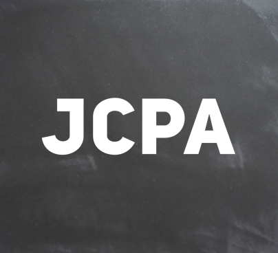
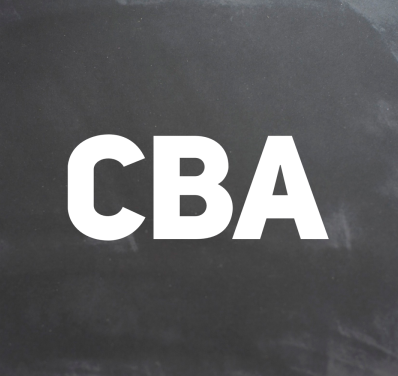
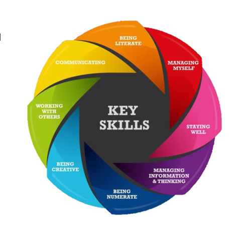

HOME
OUR SCHOOL
Blog
Newsletters
Facilities
Ceist
Prospectus
Policies
Extra Curricular
Calendar
Pastoral Care
ACADEMIC
Curriculum
Book Lists
Timetables
JCT
Programmes
Guidance
ADMIN
Parents Association
Staff
Vacancies
LATEST NEWS
CONTACT
Junior Cycle
New Junior Cycle

Junior Cycle Profile of Achievement
This replaces the old Junior Certificate that students received in September. Click on the image above to see a sample JCPA.

Classroom Based Assessment
Classroom based assessment that takes place in 2nd and 3rd Year. Click on the image above to see more about CBAs.
Other Areas of Learning
3-5 statements of learning that will appear on the JCPA. These are linked to the statements of learning & key skills of the Junior Cycle.

Key Skills of the Junior Cycle
This replaces the old Junior Certificate that students received in September. Click on the image above to see a sample JCPA.
Statements of Learning
Classroom based assessment that takes place in 2nd and 3rd Year. Click on the image above to see more about CBAs.
Subject Learning & Assessment Review
3-5 statements of learning that will appear on the JCPA. These are linked to the statements of learning & key skills of the Junior Cycle.
JCT.ie
curriculumonline.ie
ncaa.ie
@JCforTeachers

{kind=link}
{kind=link}
{kind=link}
{kind=link}